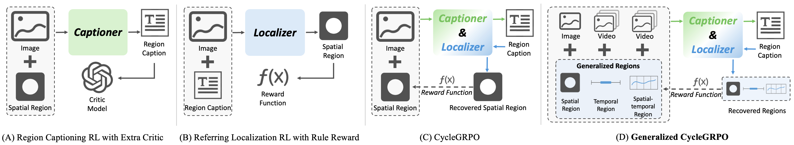
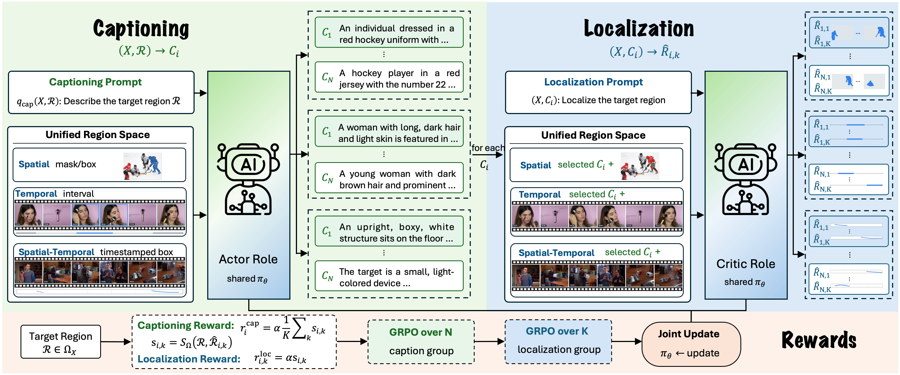
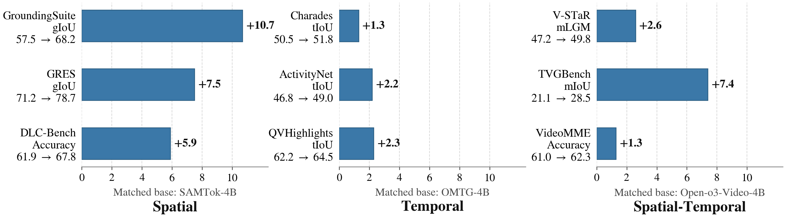
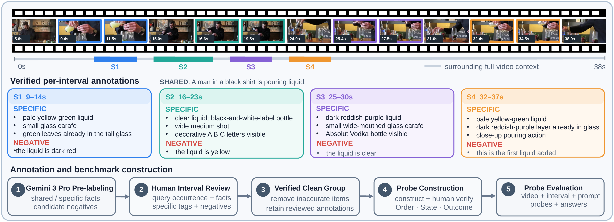
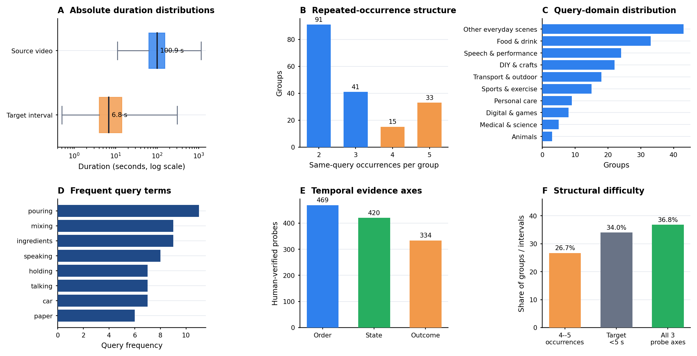
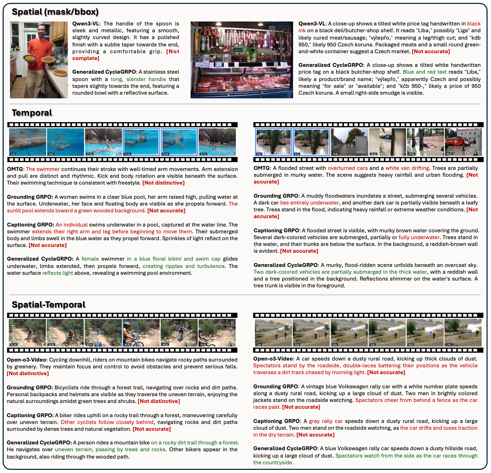

Spatial
Masks and boxes in images.
One policy describes a region, localizes its own description, and learns from the reconstruction—across masks, time intervals, and timestamped spatial evidence.

A single region–text–region cycle extends naturally from images to videos.
A model should not only describe a designated region, but also recover that region from language. Generalized CycleGRPO couples these dual capabilities with a geometrically verifiable reward, requiring neither caption annotations nor an external language-model judge during reinforcement learning.
Masks and boxes in images.
Target intervals and recurring events.
Timestamped boxes and sparse trajectories.

The policy generates candidate captions conditioned on a target region.
The same policy localizes each caption back into the original region space.
Overlap with the input region yields direct, verifiable rewards for both interfaces.
We compare matched base policies within each domain rather than mixing incompatible metrics or model families.

Distinctive Occurrence-level Video-caption Evaluation groups a target interval with semantically similar recurrences. Models view the complete video and describe a specified interval; a model-blind judge then answers verified temporal probes using only the generated caption.


